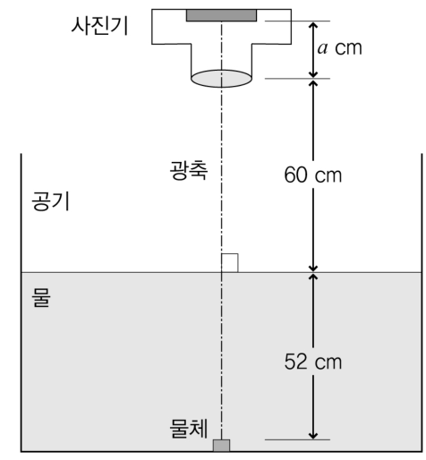
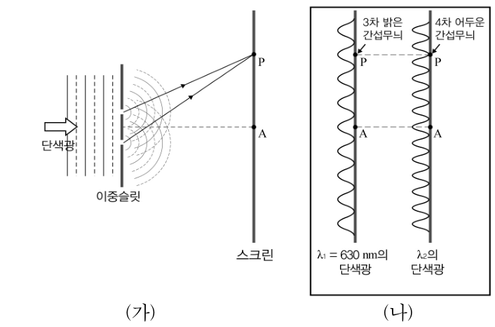
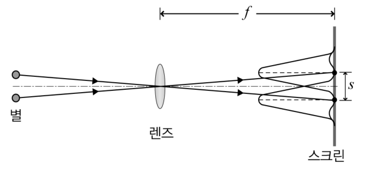

전자기·광학 객관식 5문항 — 유전체의 맥스웰 방정식·프레넬 반사·겉보기 깊이와 렌즈·이중슬릿·분해능Maxwell eqs in dielectrics · Fresnel reflectance · apparent depth & lens · double slit · Rayleigh resolution
2010학년도 중등교사 임용시험 물리 1차(객관식) 16~20번 — 전자기·광학 문항 묶음. 각 문항에서 알맞은 답을 고르시오.
- 유리→공기처럼 굴절률이 큰 쪽에서 작은 쪽으로 갈 때 입사각이 임계각보다 크면 전반사한다.
- 물속 물체는 실제보다 얕아 보인다(겉보기 깊이 = 실제 깊이/n).
- 이중슬릿: 경로차가 파장의 정수배면 밝은 무늬, (정수 + ½)배면 어두운 무늬.
- 렌즈 지름이 클수록, 파장이 짧을수록 가까운 두 점을 잘 구별한다(분해능).
자기장은 없고 균일한 전기장이 있는 무한히 넓은 공간이 자유전하와 알짜전하가 없는 유전체로 채워져 있다. 유전체 내부의 전기변위(electric displacement) \(\vec D\), 전기장 \(\vec E\), 분극(편극, polarization) \(\vec P\)에 대한 방정식으로 옳은 것을 <보기>에서 모두 고른 것은? (단, 유전체는 균일하고(homogeneous), 등방적이고(isotropic), 선형적인(linear) 성질을 가진다.)
- ㄱ. \(\nabla\cdot\vec D=0\)
- ㄴ. \(\nabla\times\vec E=0\)
- ㄷ. \(\nabla\cdot\vec P\neq0\)
- \(\nabla\cdot\vec D=\rho_{\rm free}\).
- 자기장이 시간에 따라 변하지 않으면 \(\nabla\times\vec E=-\partial\vec B/\partial t=0\).
- 균질 선형 매질: \(\vec P=\chi_e\epsilon_0\vec E=\dfrac{\chi_e}{1+\chi_e}\vec D\).
입사광선의 전기장 진동방향이 입사광선과 반사광선이 이루는 평면에 수직이면, 이 입사광선은 s-편광된 것이다. 굴절률 \(n\)인 유리에서 굴절률이 1인 공기로 s-편광된 광선을 입사시킬 때, 반사율에 대한 설명으로 옳은 것을 <보기>에서 모두 고른 것은? (단, \(n\gt 1\)이다.)
- ㄱ. 수직입사의 경우, 반사율은 0이다.
- ㄴ. 입사광선이 브루스터각(편광각)으로 입사할 경우, 반사율은 0이다.
- ㄷ. 입사각이 임계각보다 크면, 반사율은 1이다.
- 수직 입사 반사율 \(R=\left(\dfrac{n-1}{n+1}\right)^2\).
- 브루스터각에서 반사가 사라지는 것은 어느 편광인가?
- 전반사에서는 편광과 무관하게 R = 1.
그림과 같이 수조 바닥에 놓은 작은 물체를 사진기로 찍는다. 수면에서 물체까지의 거리는 52 cm, 수면에서 한 개의 얇은 렌즈인 사진기 렌즈까지의 거리는 60 cm, 사진기 렌즈로부터 필름까지의 거리는 \(a\) cm이다. 물체는 사진기 렌즈의 광축상에 있다. 물의 굴절률은 1.3이고, 공기의 굴절률은 1.0이다.

이 물체의 상이 필름에 맺힐 때, 렌즈의 초점거리는 몇 cm인가?
- 수면의 굴절로 물체는 어디에 있는 것처럼 보이는가? (겉보기 깊이)
- 렌즈에서 겉보기 물체까지의 거리로 렌즈 공식을 쓰자.
그림 (가)와 같이 이중슬릿에 단색광을 비추어 생긴 간섭무늬를 스크린에서 관찰한다. 그림 (나)는 \(\lambda_1=630\) nm인 단색광을 비추었을 때 스크린에 생긴 3차 밝은 간섭무늬와, 파장이 \(\lambda_2\)인 단색광을 비추었을 때 스크린에 생긴 4차(5번째) 어두운 간섭무늬가 스크린에서 같은 위치 P에 생긴 것을 나타낸 것이다. 점 A는 이중슬릿의 두 슬릿으로부터 거리가 같은 스크린상의 한 점이다.

이때 단색광의 파장 \(\lambda_2\)는? (단, 두 단색광은 평면파이고, 이중슬릿에 수직으로 입사한다.)
- P에서 경로차 = 3λ₁.
- 어두운 무늬: 경로차 = (m + ½)λ. 5번째 어두운 무늬의 m은?
그림과 같이 렌즈를 이용하여 파장이 \(\lambda\)인 빛을 내는 두 개의 서로 근접한 별들의 회절무늬를 렌즈의 초점거리 \(f\)에 놓은 스크린에서 관찰한다. 한 별의 가장 밝은 회절무늬의 중심이 다른 별의 첫 번째 어두운 회절무늬 중심과 일치할 때, 두 별의 가장 밝은 회절무늬의 중심 사이 거리 \(s\)는 최소분해거리이다.

최소분해거리 \(s\)의 변화에 대한 설명으로 옳은 것을 <보기>에서 모두 고른 것은? (단, 렌즈의 수차에 의한 효과는 무시한다.)
- ㄱ. \(\lambda\)가 일정할 때, 초점거리가 같고 지름이 작은 렌즈로 바꾸면 \(s\)는 감소한다.
- ㄴ. \(\lambda\)가 일정할 때, 지름이 같고 초점거리가 긴 렌즈로 바꾸면 \(s\)는 감소한다.
- ㄷ. 지름과 초점거리가 같은 렌즈를 사용할 때, \(\lambda\)가 작아지면 \(s\)는 감소한다.
- 원형 구멍의 첫 어두운 무늬: \(\sin\theta=1.22\lambda/D\).
- 스크린 위 거리 \(s=f\theta\).